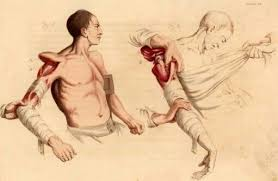
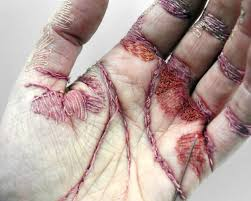
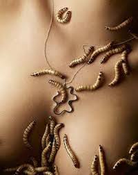
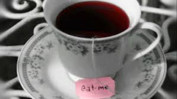
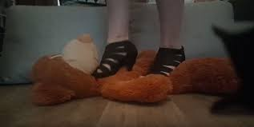

Dacrifilia (también conocida como dacrilagnia) es la parafilia en la que una persona se excita con las lágrimas o el llanto. Está asociada tanto a hombres como mujeres, siendo en la mayoría de los casos el hombre quien provoca el llanto de la mujer.
La clismafilia o klismafilia es una parafilia que consiste en recibir o, menos frecuente, poner enemas mientras se realizan juegos sexuales o el mismo acto sexual. Su práctica va acompañada, en la mayor parte de los casos, de formas fetichistas utilizando cánulas y otros elementos, para una mayor estimulación anal.
La acrotomofilia es una parafilia consistente en sentir deseo sexual o preferencia sexual por alguien que tiene algún miembro amputado. El deseo sexual, en este caso, está ligado o es dependiente del muñón o muñones de la pareja.
En psicología, placer experimentado al manipular, tocar u oler los excrementos.
La asfixia erótica, también llamada hipoxifilia, hipofixiofilia o asfixiofilia, es una manera de obtener satisfacción sexual a través de la disminución de la respiración durante la actividad sexual, puede ser realizada por uno mismo o en la actividad con otra persona.
Es un tipo de patología sexual que consiste en la excitación erótica causada por la contemplación, el contacto, la mutilación o la evocación mental de un cadáver.
La zoofilia o bestialismo es una parafilia que consiste en la atracción sexual de un humano hacia otro animal distinto de su especie. Las personas que sienten esta afinidad o atracción sexual son conocidas como zoófilos o zoofílicos, pero también se conocen como zoosexuals o simplemente "zoos".
(Trastorno pedófilo) El trastorno pedófilo se caracteriza por la presencia de fantasías, impulsos o comportamientos sexualmente excitantes recurrentes e intensos relacionados con los niños (por lo general hasta los 13 años de edad).
En cualquier diccionario de parafilias el primer término con el que nos encontraremos es abasiofilia, el cual consiste en la atracción sexual que experimentan ciertos individuos hacia personas con algún tipo de minusvalía física, como puede ser una cojera o la amputación de algún miembro.
En la apotemnofilia nos encontramos con personas con un deseo intenso de que se les ampute una parte de su cuerpo que no consideran suya. Nos encontramos ante uno de los malestares psíquicos más extraños de los últimos tiempos.
La consuerofilia es la práctica en donde un individuo busca placer sexual al coserse la piel. En un principio, este zurce zonas poco dolorosas como la piel superior de las manos y luego avanza a otras partes, cosiendo incluso sus propios genitales.
Atracción a personas deformadas. La dismorfofilia es el comportamiento en el que la excitación erótica y la facilitación y el logro del orgasmo son relativos y/o dependientes de deformidades del cuerpo.
Aunque suele relacionarse con la zoofilia, la formicofilia es una parafilia diferente en la que la particularidad reside en obtener placer sexual mediante el contacto directo con animales pequeños en zonas erógenas del cuerpo como el pene, el clítoris, el pecho o el ano pero no se establece contacto sexual como sí sucede en la zoofilia.
Hay personas que se excitan con olores desagradables. La Flatofilia o eproctofilia es la atracción sexual por el olor de los gases intestinales propios o de la pareja. En el mundo anglosajon se conoce como eproctophilia o fart fetishism, esto es, fetichismo en los distintos olores desagradables.
La hemotigolagnia es el comportamiento en el que la excitación erótica y la facilitación y el logro del orgasmo son relativos y/o dependientes de los tampones usados.
La emetofilia o vomerofilia (conocida vulgarmente como "ducha romana") es una parafilia en la que la excitación se obtiene por el vómito ya sea viéndolo, induciéndolo o haciéndolo por sí mismo, o también teniendo fantasías al respecto.
Traducción del inglés-Un fetiche de aplastamiento es un fetiche y una parafilia en la que la excitación sexual se asocia con la observación de objetos aplastados o aplastados por uno mismo. Los objetos aplastados varían desde artículos inanimados hasta aplastamientos dañinos y / o fatales de invertebrados o vertebrados.
La nosolagnia se refiere a impulsos sexuales o excitación resultante del conocimiento de que la pareja tiene una enfermedad terminal.